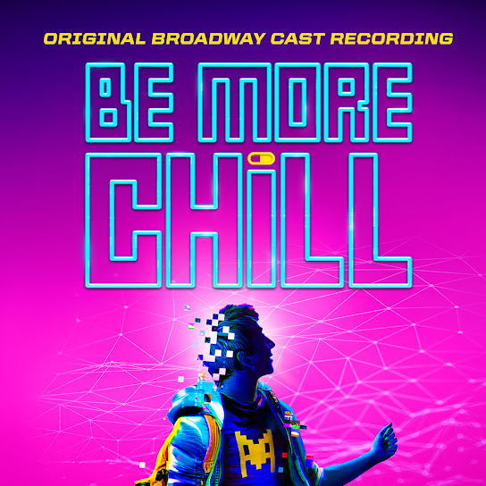

Multiple sexual references and underage drinking, as well as drug use. Strong language, including "f***" and "sh**."
High school "loser" Jeremy Heere gets a chance to become a "cool kid" by swallowing a pill containing a mind-control device.
1, 3, 12